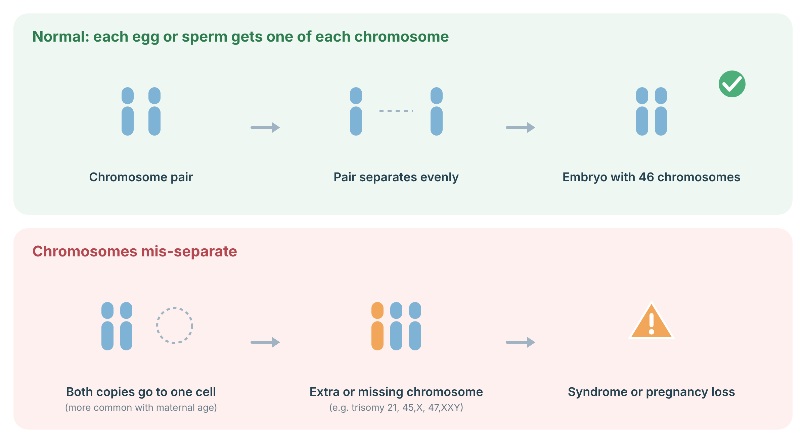
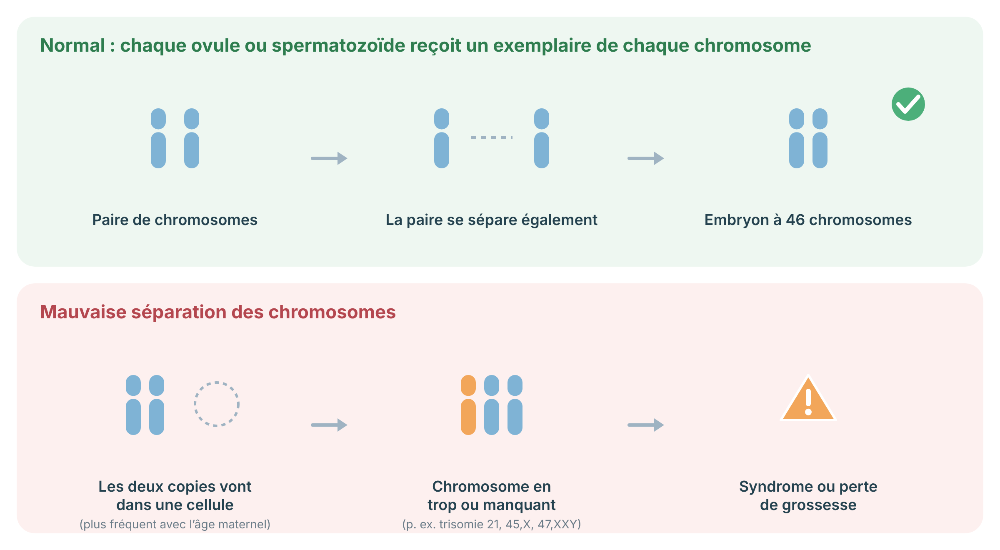

A protocol for Turner syndrome: karyotype, Y material, lifelong aortic surveillance indexed to body size, growth, puberty induction, fertility, and screening.
Protocole pour le syndrome de Turner : caryotype, matériel Y, surveillance aortique à vie indexée à la taille corporelle, croissance, induction pubertaire, fertilité et dépistage.
Turner syndrome affects girls and women who are missing all or part of one X chromosome. The most common features are short stature and ovaries that stop working early, so most need hormone treatment to start puberty. Some have heart, kidney, hearing, or thyroid differences. Intelligence is usually typical, though some have specific learning differences. With regular care, most women with Turner syndrome lead healthy, independent lives.
Le syndrome de Turner touche les filles et les femmes à qui il manque tout ou une partie d'un chromosome X. Les signes les plus fréquents sont une petite taille et des ovaires qui cessent de fonctionner tôt; la plupart ont donc besoin d'un traitement hormonal pour déclencher la puberté. Certaines ont des différences cardiaques, rénales, auditives ou thyroïdiennes. L'intelligence est habituellement typique, bien que certaines aient des difficultés d'apprentissage précises. Avec un suivi régulier, la plupart des femmes atteintes mènent une vie saine et autonome.
Karyotypes include 45,X, mosaicism (e.g. 45,X/46,XX), and structural X abnormalities (isochromosome Xq, ring X). A karyotype of at least 30 cells is standard; FISH for Y material is done when a marker chromosome or virilization is present, because Y material carries a risk of gonadoblastoma (prophylactic gonadectomy is recommended). Prenatal findings include cystic hygroma, increased NT, coarctation, and hydrops; mosaic 45,X found on prenatal testing often has a milder phenotype.
Les caryotypes comprennent 45,X, le mosaïcisme (p. ex. 45,X/46,XX) et des anomalies structurelles de l'X (isochromosome Xq, X en anneau). Un caryotype d'au moins 30 cellules est la norme; une FISH pour le matériel Y est faite en présence d'un chromosome marqueur ou d'une virilisation, car le matériel Y comporte un risque de gonadoblastome (une gonadectomie prophylactique est recommandée). Les constats prénatals comprennent l'hygroma kystique, une CN augmentée, la coarctation et l'hydrops; le mosaïcisme 45,X trouvé en prénatal a souvent un phénotype plus léger.
When eggs and sperm form, each chromosome pair separates so that every egg or sperm gets one copy. If a pair fails to separate (nondisjunction), more often in eggs as maternal age rises, the embryo has an extra or missing chromosome (aneuploidy). Most aneuploid pregnancies miscarry early; some continue, as with trisomy 21 (Down syndrome), 45,X (Turner syndrome) or 47,XXY (Klinefelter syndrome). Ultrasound markers and NIPT screen for aneuploidy, and CVS or amniocentesis confirm it.

Sources: Charalambous C, et al. Nat Rev Mol Cell Biol 2023;24:27–44 (PubMed); Gravholt CH, et al. Eur J Endocrinol 2024;190:G53–G151 (PubMed).
Lors de la formation des ovules et des spermatozoïdes, chaque paire de chromosomes se sépare pour que chaque cellule reçoive une copie. Si une paire ne se sépare pas (non-disjonction), plus souvent dans l’ovule avec l’âge maternel, l’embryon a un chromosome en trop ou manquant (aneuploïdie). La plupart des grossesses aneuploïdes se terminent par une fausse couche précoce; certaines se poursuivent, comme la trisomie 21 (syndrome de Down), 45,X (syndrome de Turner) ou 47,XXY (syndrome de Klinefelter). Les marqueurs échographiques et le DPNI dépistent l’aneuploïdie; la PVC ou l’amniocentèse la confirment.

Sources : Charalambous C, et al. Nat Rev Mol Cell Biol 2023;24:27–44 (PubMed); Gravholt CH, et al. Eur J Endocrinol 2024;190:G53–G151 (PubMed).
Heart checks are lifelong. A bicuspid aortic valve and narrowing of the aorta (coarctation) are more common, and the aorta can widen over time. Because women with Turner syndrome are smaller, aortic size is compared to body size. Before pregnancy, a heart assessment is essential.
Les examens cardiaques sont à vie. Une valve aortique bicuspide et un rétrécissement de l'aorte (coarctation) sont plus fréquents, et l'aorte peut se dilater avec le temps. Comme les femmes atteintes du syndrome de Turner sont plus petites, la taille de l'aorte est comparée à la taille corporelle. Avant une grossesse, une évaluation cardiaque est essentielle.
Original diagrams are the work of the author (© 2026 Dr. Andrew Shuen).
Les schémas originaux sont l'œuvre de l'auteur (© 2026 Dr Andrew Shuen).